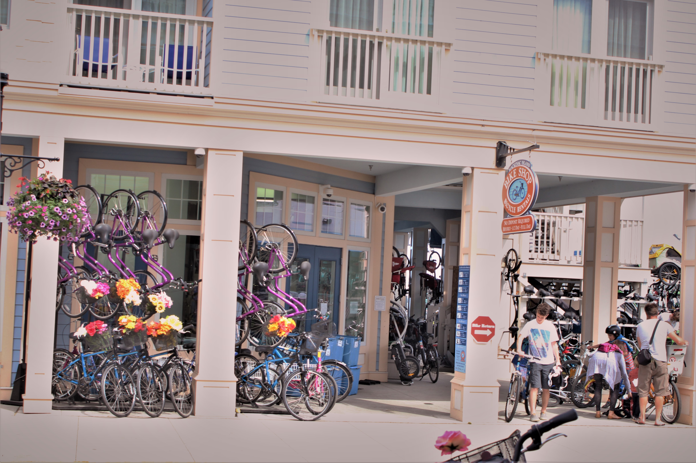
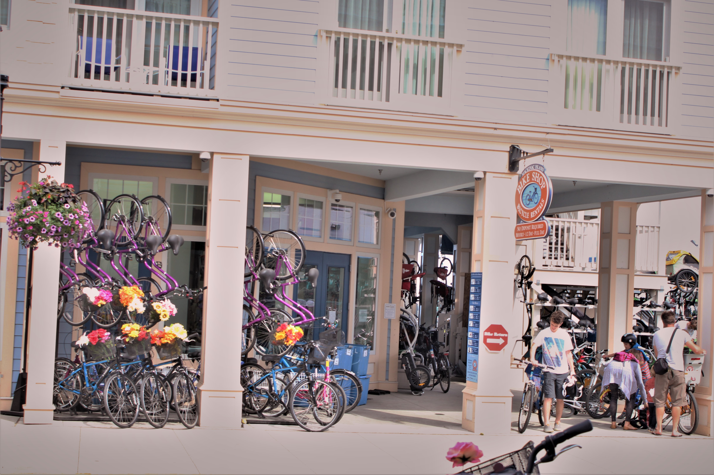
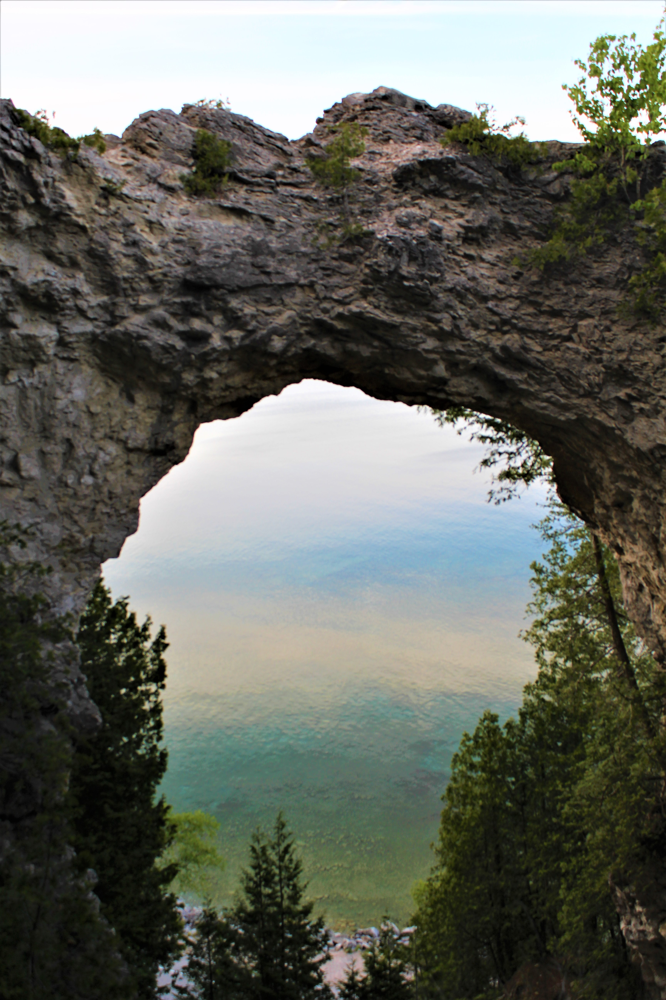
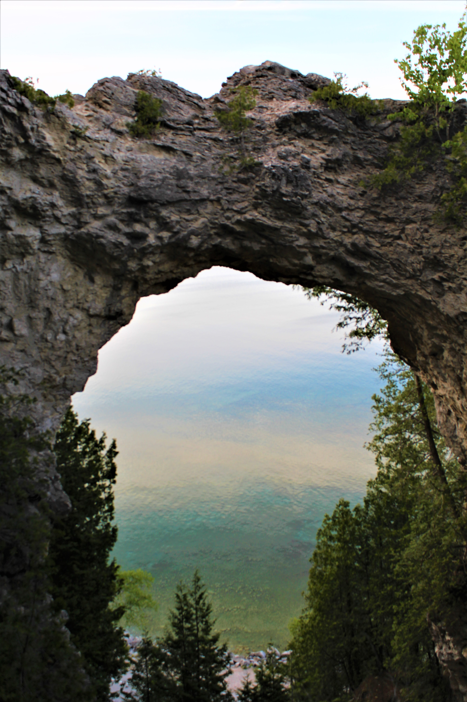

In June of 2016, my family and I took a week long trip to Mackinac Island, Michigan and it was one of the coolest places I have been. It has a little something for everyone and will keep you wanting to explore more.
About
Mackinac Island is located off the coast of Northern Michigan in Lake Huron. It is only 8 miles around but is packed full of fun! To get to Mackinac Island, we drove from St. Louis, MO to Mackinac City, MI; about a 10 hour drive. The island is then a 40 minute ferry ride from the city. The coolest fun fact about the island is that there is a ban on automobiles. In order to get around, you have a few options:
- Bicycles - the most common option
- Horse and carriage
- Walking
- Scooters
There are a few exceptions to this, such as emergency vehicles, snowmobiles in the winter and construction vehicles. When the movie 'Somewhere in Time was filmed on the island, they received special permission to use a car on the island. There is an 8 mile highway called M-185 that runs the perimeter of the island. About 80% of the island is a State Park and has over 100 miles of trails.
Main Street
Main Street is where the majority of the action is, so to say. You exit the ferry and your greeted with the hustle and bustle of Main Street. The street is dotted with a variety of shop signs, bikes of all colors lined up and down the street, and the sound of horse drawn carriages.
 


Arch Rock
Arch Rock is a natural limestone formation that sits 146ft above the shoreline and has one of the best views of the lake. We decided to take the steps right off M-185 which consisted of 207 steps in total! Talk about getting your cardio in!

 

Grand Hotel
The Grand Hotel is another impressive site to see and is nothing short of 'grand'. It boasts the worlds longest porch and each room has its own style and theme. Your stay here includes a full breakfast, Grand Luncheon Buffet, a 5-course dinner, access to the many shops, golf course, swimming pool and Ice Cream Parolor. If you wish to visit without staying at the hotel, it will cost you $10 just to enter the grounds plus access fees for any ammenities.
Fun fact: Many distinguuished guests have stayed at the Grand Hotel, including 5 Presidents.
Another fun fact: The movie 'Somewhere In Time' was filmed at The Grand Hotel.

Fort Mackinac
Fort Mackinac is the oldest building on the island, founded during the American Revolution. The Officers Stone Quarters, the south sally port and the stone ramparts are part of the original fort, but the buildings have been restored to how they looked during the final years of it's occupation. Interpreters depict U.S. Army soldiers from that period and there is also a cannon or rifle firing demo every hour.
Fudge
One of my favorite parts of Mackinac Island, fresh fudge! They are actually the Nations fudge capital, making 10,000 pounds of fudge daily during
the peak tourism season. There are 16 fudge shops on the island, most located along Main Street. You can walk or ride up and down sampling delicious
fudge while shopping or catching a meal at one of the many restaurants. Some shops, such as Rybas and Joanns, have online ordering for their fudge
and other sweets, but it tastes much better when it's fresh off the marble slap.
There are numerous activies to keep everyone happy and busy for weeks. I can't wait to go back and revist my favorite views and eat more delicious fudge!Activities